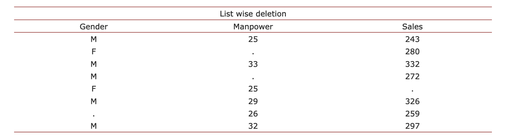
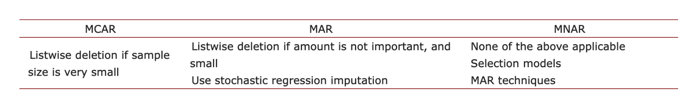

3. Methodology
Missing Data Imputation
Techniques for addressing missing data can be simplified into conventional approaches or brought up to date through the application of more recent methods. Although it goes without saying that the more recent methods are always preferable, there are instances in which the older methods could be useful. Also, we have to figure out why the straightforward approaches are not producing the desired results.
3.1 Traditional Methods
Deleted records and single-valued imputation are two of the more traditional approaches to handling missing data [27]. In a complete-case analysis, also known as list-wise deletion, missing values are completely removed from the dataset and thrown away. As a countermeasure to the loss of data that results from list-wise deletion, pair-wise deletion eliminates only incomplete cases (Table 3).
This strategy is useful for addressing very few missing data in the dataset and may not introduce bias into the study. Nevertheless, doing so will deprive the research of essential information, despite the fact that this was traditionally the strategy in quantitative research that was utilized most frequently to treat missing data. Another simple solution for missing data is to impute it with a mean or median value, however doing so introduces bias into the study because it reduces the range of possible data point values.

Table 3. Examples of list wise deletion and pair wise deletion [28].
When it comes to imputation using linear regression, a correlation matrix is utilized in order to identify a limited number of predictors of the variables that are missing values. The variables that are the best predictors are utilized as predictor variables, and the variable that has missing data is used as the dependent variable in the regression equation. This equation is then used to make predictions about the values that are missing. Imputation based on stochastic regression is an improvement on imputation that is based on linear regression. Linear regression-based imputation involves adding random noise components to a regression line in order to restore lost variability in the data.
There are also general procedures, scale-item techniques, and time-series techniques that fall within the category of conventional methods.
Enders provided a concise summary of the traditional methods for missingness mechanisms, which we may think of as a road map for dealing with missing data and which can be found in Table 4.
In spite of this, every one of the aforementioned approaches generates bias and does not adequately address the issue of missing data.
3.2 Modern Imputation Techniques
Dealing with missing values is the most difficult process since the exact nature of the missing data is unknown, which makes the task more difficult. Multiple imputations and maximum likelihood are the “state of the art” methods that have dealt with the problem of managing missing data in a satisfactory manner. The concept of multiple imputations and how they operate will be the primary focus of this dissertation.
The method known as multiple imputations [30] is widely regarded as the most effective strategy for dealing with the issue of missing data. This is because it generates numerous copies of the dataset, each of which contains a unique set of imputed values.
Maximum-likelihood imputation [31], which is based on a variance-covariance matrix for the variables and uses all of the data points that are currently available to determine what values should be imputed for missing data.
When applied to MCAR and MAR data, multiple imputations result in results that are objective. Using methods of multiple imputation to handle missing data has a number of advantages that come with it. The most important advantage is that using these methods reduces the amount of bias that is present in the dataset when it is analyzed. In addition to this, they improve the accuracy of the data, which in turn helps to advance the validity of an experiment that is being carried out utilizing the data. Again, when the data values within a dataset are brought closer together through the use of imputation methods, there is an increase in the precision of the data. Imputation procedures, on the other hand, contribute to a more accurate statistical analysis since they make a dataset less susceptible to being skewed by outliers.
The expectation-maximization algorithm and the Bayesian simulation approach are two further examples of methods [32].

Table 4. Summary of traditional ways of treating missing data [29].
In the realm of data imputation, a relatively new method of imputation known as MICE has gained widespread acceptance [33]. As a result of this, the MICE technique, in conjunction with multiple imputations, has been investigated and utilized throughout this dissertation. In the following chapter, you will find a more in-depth discussion on the topic of multiple imputations, as well as MICE and its application to the analysis.`